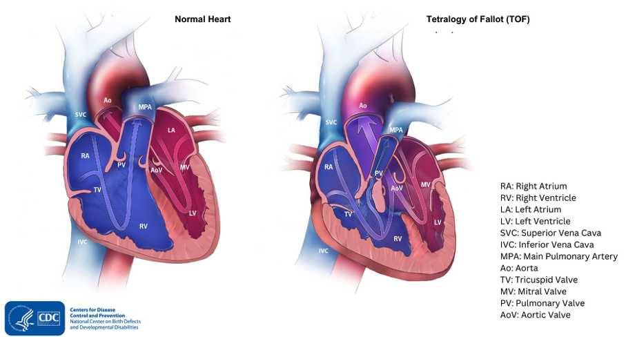

定義與定位
典型 TOF 是 cyanotic congenital heart disease，但輕度阻塞者可呈 pink TOF。本篇以 TOF with pulmonary stenosis（PS） 為主；合併 pulmonary atresia、major aortopulmonary collateral arteries（MAPCAs）、absent pulmonary valve 或 atrioventricular septal defect 者，需要另外規劃肺血流與手術。[3]
心臟解剖：先找出四項異常

圖 1｜左：正常心臟；右：TOF。原圖：CDC／NCBDDD；圖檔取自 OpenAnesthesia 圖 1，保留原圖標示。CDC 疾病說明。
| 圖上要找的異常 | 解剖位置 | 對血流的影響 |
|---|---|---|
| ① VSD | 左、右心室間的缺損，通常大且 nonrestrictive | 兩心室壓力可接近；分流方向主要取決於流出阻力 |
| ② RVOTO／PS | 右心室漏斗部、肺動脈瓣／瓣環，可延伸至肺動脈 | 血難以從 RV 進入肺部；可以同時有固定與動態阻塞 |
| ③ Overriding aorta | 主動脈根部跨在 VSD 上方 | 可接收左右兩心室的血，不只是 LV 的含氧血 |
| ④ Right ventricular hypertrophy（RVH） | 右心室肌肉增厚 | 主要是壓力負荷的結果，並非四個互不相關的原發缺陷 |
病因與機制
核心解剖是 outlet／infundibular septum 前上方偏移，造成流出道狹窄、VSD 與主動脈騎跨；RVH 隨壓力負荷形成。可合併 22q11.2 deletion 等遺傳異常，診斷後應評估相關表現與遺傳諮詢需求。[4]
flowchart TD A["流出道中隔偏移"] --> B["RVOT 出口變窄"] A --> C["大 VSD＋主動脈騎跨"] B --> D["肺血流減少"] B --> E["右心室壓力負荷"] E --> F["RV 肌肉增厚"] C --> G["阻塞重時右向左分流"] B --> G D --> H["全身血氧下降"] G --> H classDef danger fill:#fff0ed,stroke:#b42318,color:#7a271a class H danger
圖 2｜發紺的關鍵是肺血流不足與右向左分流；不是看到 VSD 就一定發紺。
臨床表現
| 表現 | 判讀 |
|---|---|
| 發紺／發紺逐漸加重 | 肺血流不足；早期正常血氧不能排除較輕的 TOF |
| 胸骨左緣粗糙 systolic ejection murmur | 主要來自 RVOT／肺動脈流出阻塞，不是大型 VSD 本身 |
| Tet spell | 突然更發紺、呼吸急促；重者意識改變／昏厥。肺血流驟降時雜音可變短、變小 |
| 餵食困難、體重增加不佳 | 需重新評估缺氧、能量消耗及肺血流狀態 |
| Pink TOF | 阻塞輕，可能無明顯發紺；若左向右分流多，可有肺血流過多與心衰竭表現 |
發紺程度與雜音音量不能單獨代表病情；要合看平常血氧、當下灌流與超音波。[4:1][3:1]
診斷
| 檢查 | 要回答的問題 |
|---|---|
| Echocardiography＋Doppler | 確認 VSD、aortic override、RVOTO 與 RVH；定位阻塞、肺動脈瓣環／分支肺動脈、動脈導管及冠狀動脈走向 |
| Pulse oximetry | 建立個人基準與趨勢；單一數值不能取代解剖及灌流評估 |
| Electrocardiogram（ECG） | 可見右軸偏移／RVH；不能靠 ECG 確診 |
| Chest X-ray | 可見 boot-shaped heart 與肺血管紋理減少；不是每位病童都有 |
| CT／cardiac MRI／導管檢查 | 超音波資訊不足或解剖複雜時，補肺動脈、側枝與冠狀動脈資料；不一定每例都需導管檢查 |
產前可由 fetal echocardiography 診斷；出生後以心臟超音波確認。[5][4:2]
鑑別診斷
| 情境 | 需要區分 | 決策關鍵 |
|---|---|---|
| 新生兒明顯發紺 | TGA、Pulmonary atresia、其他複雜先天性心臟病 | 緊急超音波辨認大血管連接、肺血流與混合來源 |
| 發紺＋呼吸窘迫 | 肺病、persistent pulmonary hypertension of the newborn（PPHN） | 結構、肺部病變與肺高壓需並行評估，不以氧氣反應單獨確診 TOF |
| 已知 TOF 突然惡化 | Tet spell、脫水／感染；分流術後另排除 shunt obstruction | 不能把每次低血氧都視為原本的發紺；須看當下肺血流及灌流 |
治療
完整的支持治療、tet spell 急救、分流／支架選擇與手術圖解集中在 TOF correction。
| 情境 | 方向 |
|---|---|
| 穩定、無症狀、肺血流足夠 | 追蹤血氧／生長，通常 3–6 個月 complete repair |
| Duct-dependent pulmonary flow | 監測下給 PGE₁ 維持導管，銜接早期介入 |
| 缺氧或 tet spell | 穩定 ABC；疑似 spell 即住院評估 complete repair 或暫時性 palliation |
| 早產、低出生體重、肺動脈小或其他重大共病 | 可先 palliation，再擇期 complete repair；不是每例都要分兩階段 |
| 肺血流過多的 pink TOF | 依肺血流過多／心衰竭處理並規劃修補，不能直接套用「增加肺血流」策略 |
時機與路徑依個別解剖、生理及中心經驗決定。[1:1][3:2][2:1]
併發症與預後
| 階段 | 重點 |
|---|---|
| 未矯正 | 缺氧發作、成長受影響；重度發作可有昏厥／神經傷害，並留意 Infective endocarditis |
| 矯正後 | 殘餘 RVOTO／VSD、pulmonary regurgitation、RV 擴大或功能下降、心律不整 |
| 長期 | 即使沒有症狀，仍需終身先天性心臟追蹤；部分病人後續需要肺動脈瓣或其他再次介入 |
追蹤會依問題安排 echo、ECG／ambulatory monitoring、cardiac MRI 與運動功能評估。手術改變循環，不等於終身不再需要追蹤。[6][3:3]
禁忌與陷阱
相關連結與來源
- TOF correction — 術前支持、tet spell、palliation 與 complete repair
- Echocardiography · Cardiac auscultation — 診斷與床邊判讀
- Pediatric heart disease · Cardiac Surgery · Cardio Category — 科別入口
AATS 2022 Expert Consensus：Management of infants and neonates with TOF，JTCVS 2023；本篇採用共識摘要可核對的時機與風險分層。 ↩︎ ↩︎
ACC：TOF 前後修補流程圖，2026 修訂，p. 1：疑似 hypercyanotic spell 的住院介入評估。 ↩︎ ↩︎
ACC：Unrepaired and repaired TOF clinical practice algorithm，更新 2026-04-12。 ↩︎ ↩︎ ↩︎ ↩︎
OpenAnesthesia：Tetralogy of Fallot，2025-12-02；解剖、理學及影像教學，圖 1 原始出處為 CDC。手術時機以 AATS／ACC 的適用條件為準。 ↩︎ ↩︎ ↩︎
CDC：Tetralogy of Fallot，2026-01-08。四項異常與診斷。 ↩︎
AHA：Tetralogy of Fallot，檢視日期 2026-07-30。 ↩︎